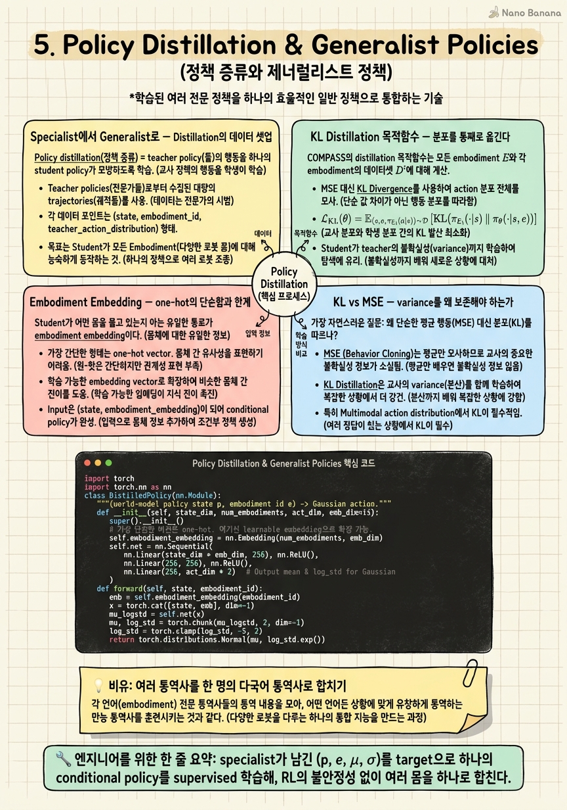

Policy Distillation & Generalist Policies

🎯 학습 목표
- specialist → generalist KL distillation의 목적함수를 쓸 수 있다
- one-hot embodiment embedding의 장점과 한계를 안다
- KL(분포 보존) vs MSE(평균만)의 차이가 왜 중요한지 이해한다
- Open-X/RT-X 등 대규모 generalist 계보와의 연결을 설명할 수 있다
- distillation의 averaging effect가 어디서 오는지 진단할 수 있다
Chapter 4까지 우리는 embodiment마다 별도의 residual RL specialist를 얻었다. Carter(wheeled), H1·G1(humanoid), Spot(quadruped) 각각에 대해 X-Mobility가 뽑는 base action 위에 residual을 얹어 morphology에 맞춘 정책을 학습한 것이다. 문제는 배포다. 로봇 fleet마다 서로 다른 네트워크 가중치를 관리하고, 새 embodiment가 추가될 때마다 독립 파이프라인을 유지하는 것은 시스템적으로 지속 불가능하다. 우리가 진짜 원하는 것은 하나의 정책이 embodiment id만 바꿔주면 여러 몸을 모두 몰 수 있는 generalist다.
COMPASS의 3단계 중 마지막인 policy distillation(정책 증류)은 바로 이 통합을 supervised learning 문제로 바꾼다. 각 specialist를 teacher로 두고, 그들이 남긴 입출력 분포 — (world model policy state \(p\), one-hot embodiment id \(e\), PPO Gaussian action의 mean·variance) — 를 데이터셋으로 기록한다. 그리고 단 하나의 conditional policy \(\pi^{dist}_\theta\)가 \((p, e)\)를 받아 teacher의 action 분포를 재현하도록 KL divergence를 최소화한다. RL의 불안정성과 exploration은 이미 specialist 단계에서 끝났으므로, distillation은 안정적인 회귀 문제로 축소된다.
하지만 이 단계는 동시에 이 강의 후반부(Chapter 8)를 관통하는 averaging problem의 씨앗을 심는다. 서로 다른 몸을 위한 여러 정책을 하나의 조건부 네트워크로 압축할 때, 조건화가 충분히 강하지 않으면 정책은 embodiment 간 행동을 평균 내버린다. 왜 COMPASS가 MSE가 아니라 KL을 쓰는지, 왜 one-hot이 가장 단순하면서도 안전한 출발점인지 — 이 모든 설계 결정이 averaging을 억제하기 위한 방어선이라는 관점에서 이 챕터를 읽어야 한다.
핵심 내용
Specialist에서 Generalist로 — Distillation의 데이터 셋업
Policy distillation(정책 증류) = teacher policy(들)의 행동을 하나의 student policy가 supervised로 모방하도록 학습하는 절차. 원래 Hinton의 knowledge distillation을 정책 학습으로 옮긴 것으로, RL의 online 탐색을 offline 회귀로 바꾸는 것이 핵심 이득이다.
COMPASS에서 teacher는 Chapter 4에서 얻은 embodiment별 specialist \(\pi^{(i)}_\phi\)다. 각 specialist는 world model이 뽑은 policy state \(p\)를 입력받아 Gaussian action \(\mathcal{N}(\mu^{(i)}(p), \sigma^2)\)를 출력한다. 여기서 \(\sigma\)는 PPO가 학습 과정에서 유지하는 exploration variance다. Distillation을 위해 우리는 각 specialist를 환경에서 굴리면서(rollout) 매 스텝의 튜플 \((p, e^{(i)}, \mu^{(i)}(p), \sigma^2)\)를 기록한다. 즉 teacher의 '무엇을 봤고, 어떤 몸이었고, 어떤 분포로 행동했는가'를 통째로 저장하는 것이다.
데이터 규모는 embodiment당 320 trajectory × 128 step ≈ 40k frame이다. 이 정도 규모는 4x H100에서 다룰 수 있는 실용적 크기이며, 각 embodiment가 균등하게 대표되도록 설계된다. 중요한 미묘함은 어떤 rollout을 기록하는가인데, COMPASS는 성공한 궤적만 남기는 good-only 필터링이 오히려 marginal한 개선만 준다는 것을 발견했다. 실패 케이스가 담고 있는 corner case — 충돌 직전의 회피, 좁은 통로에서의 재조정 — 가 오히려 학습에 유용하기 때문이다(이 점은 Chapter 4의 covariate shift 논의와 정확히 맞닿는다).
student \(\pi^{dist}_\theta\)의 구조는 teacher와 latent pipeline을 공유하되, 결정적 차이는 입력에 embodiment embedding을 조건으로 받는다는 점이다. 같은 latent pipeline 뒤에 embodiment embedding conditioning을 붙이고, 그 위에 MLP가 mean \(\mu_\theta(p, e)\)를 내고 별도의 global variance \(\sigma_\theta^2\)를 학습한다. 여러 teacher의 지식이 이 하나의 조건부 헤드로 흘러 들어가는 것이 distillation의 물리적 실체다.
KL Distillation 목적함수 — 분포를 통째로 옮긴다
COMPASS의 distillation 목적함수는 모든 embodiment \(E\)와 각 embodiment의 데이터셋 \(D^i\)에 대해 teacher 분포와 student 분포 사이의 KL을 최소화하는 것이다.
\[\min_\theta \sum_{i\in E}\sum_{d^i\in D^i} \text{KL}\big(\mathcal{N}(\mu^{(i)}(p),\sigma^2)\,\big\|\,\mathcal{N}(\mu_\theta(p,e^{(i)}),\sigma_\theta^2)\big)\]
여기서 teacher 분포 \(\mathcal{N}(\mu^{(i)}(p),\sigma^2)\)는 고정된 target이고, student는 자신의 mean \(\mu_\theta(p, e^{(i)})\)와 variance \(\sigma_\theta^2\)를 조정해 이 target에 맞춘다. 조건 \(e^{(i)}\)가 결정적이다 — 같은 policy state \(p\)라도 embodiment id가 다르면 다른 target 분포를 맞춰야 하므로, 네트워크는 embodiment마다 행동을 분기시키도록 강제된다.
두 Gaussian 사이의 KL은 닫힌 형태(closed form)로 계산된다. 1차원 성분에 대해:
\[\text{KL}\big(\mathcal{N}(\mu_1,\sigma_1^2)\,\|\,\mathcal{N}(\mu_2,\sigma_2^2)\big) = \log\frac{\sigma_2}{\sigma_1} + \frac{\sigma_1^2 + (\mu_1-\mu_2)^2}{2\sigma_2^2} - \frac{1}{2}\]
이 식을 뜯어보면 distillation이 무엇을 하는지가 드러난다. 우변의 \((\mu_1-\mu_2)^2\) 항은 student mean이 teacher mean에서 벗어난 만큼 벌점을 주는데, 그 벌점의 크기는 \(2\sigma_2^2\)로 나뉜다. 즉 student가 확신하는(variance가 작은) action 차원일수록 mean 오차에 더 민감하고, uncertain한 차원은 관대해진다. 여기에 \(\log(\sigma_2/\sigma_1)\)와 \(\sigma_1^2/2\sigma_2^2\) 항이 더해져 student의 variance가 teacher의 variance를 따라가도록 만든다.
실무적으로 이 KL 항의 gradient는 안정적이다. teacher가 고정되어 있으므로 target이 움직이지 않고, exploration이나 reward 노이즈가 개입하지 않는다. 이것이 distillation을 'RL의 껍데기를 쓴 회귀'로 만드는 이유이며, 4x H100에서 40k frame/embodiment를 무리 없이 수렴시킬 수 있는 배경이다.
Embodiment Embedding — one-hot의 단순함과 한계
student가 어떤 몸을 몰고 있는지 아는 유일한 통로가 embodiment embedding이다. COMPASS의 가장 단순한 버전은 길이 \(N\)의 one-hot 벡터(\(N\) = embodiment 수)로 각 몸을 표현한다. Carter=[1,0,0,0], H1=[0,1,0,0]처럼 완전히 직교하는 표현이다.
one-hot의 장점은 간섭이 없다는 것이다. 각 embodiment가 임베딩 공간에서 서로 최대로 떨어져 있으므로, 한 몸의 gradient가 다른 몸의 표현을 오염시키지 않는다. 이는 averaging problem에 대한 가장 보수적이고 강력한 방어다. 조건 신호가 명확할수록 네트워크가 embodiment 간 행동을 뭉갤 여지가 줄어든다. distillation처럼 여러 teacher를 하나로 합치는 상황에서, one-hot은 '평균 내지 마라'는 신호를 가장 선명하게 전달한다.
한계는 명백하다. one-hot은 unseen embodiment에 대해 무력하다. 벡터 공간에 여유 축이 없으므로, 학습 시 본 적 없는 새 로봇은 표현할 자리 자체가 없다. 새 embodiment를 추가하려면 임베딩 차원을 늘리고 재학습해야 한다. 이는 Chapter 1에서 언급한 '구조적 분리' 패러다임의 대가로, 확장성을 유연성과 맞바꾼 셈이다.
COMPASS 논문은 대안으로 learnable embedding을 future work으로 지목한다. 각 embodiment를 연속적인 \(d\)차원 벡터로 학습하면, embedding space에서의 보간(interpolation)을 통해 unseen embodiment로 일반화할 가능성이 열린다. 예컨대 Spot과 H1 사이 어딘가에 위치하는 새 4족-2족 하이브리드를 두 임베딩의 보간으로 근사하는 식이다. 하지만 이 유연성은 averaging risk를 다시 불러온다 — 임베딩이 가까운 embodiment들의 행동이 서로 새어 나갈(leak) 수 있기 때문이다. one-hot에서 learned로 가는 것은 단순한 구현 디테일이 아니라, 확장성과 averaging 억제 사이의 근본적 trade-off를 다시 협상하는 일이다.
| 기준 | one-hot embedding | learnable embedding |
|---|---|---|
| 차원 | \(N\) (embodiment 수) | 임의 \(d\) |
| embodiment 간 간섭 | 없음(직교) | 존재(보간 가능성의 대가) |
| unseen 일반화 | 불가 | 보간으로 가능성 (future work) |
| averaging risk | 최소 | 상승 |
| COMPASS 채택 | 기본 버전 | 향후 방향 |
KL vs MSE — variance를 왜 보존해야 하는가
가장 자연스러운 질문. mean만 맞추면 되지 않나? student mean \(\mu_\theta\)가 teacher mean \(\mu^{(i)}\)를 재현하도록 단순 MSE로 회귀하면 훨씬 간단하다. COMPASS는 KL/All(분포 전체)과 MSE/All(mean만)을 ablation으로 비교했고, MSE가 약간 열등하다 — 특히 H1(humanoid)에서 는 결과를 얻었다.
이유는 variance에 담긴 정보에 있다. teacher specialist의 \(\sigma^2\)는 PPO가 학습하며 남긴 exploration의 흔적이자, 각 action 차원의 민감도 지도다. variance가 큰 차원은 정확한 값이 덜 중요한(로봇이 좀 틀려도 괜찮은) 차원이고, variance가 작은 차원은 정밀해야 하는 차원이다. MSE는 모든 차원을 동등하게 취급해 이 지도를 통째로 버린다. 반면 KL은 앞서 본 \((\mu_1-\mu_2)^2 / 2\sigma_2^2\) 항을 통해 민감한 차원에 자동으로 더 큰 가중치를 준다.
variance 보존이 결정적인 두 번째 이유는 training noise와 architectural 차이의 관리다. distillation은 여러 teacher(구조·학습 노이즈가 제각각인)를 하나의 student 구조로 압축한다. teacher마다 다른 variance를 student가 그대로 흡수하면, 네트워크는 '이 embodiment의 이 차원은 원래 불확실하다'는 사실을 인지한 채 학습한다. 이것이 서로 다른 teacher를 무리하게 하나의 sharp한 점 추정으로 뭉개는 것을 막아준다 — 다시 말해 KL은 averaging의 자연스러운 완충재다.
H1에서 격차가 특히 큰 것은 humanoid의 action 분포가 wheeled보다 훨씬 복잡하고 multimodal에 가깝기 때문으로 해석할 수 있다. 복잡한 분포일수록 mean만으로는 재현이 어렵고, variance 정보가 있어야 그 분포의 '폭'을 올바로 복원한다. 이 관찰은 Chapter 8의 generative policy(diffusion·flow) 논의로 직결된다 — Gaussian variance조차 이렇게 중요하다면, 진짜 multimodal 분포를 다루려면 단일 Gaussian을 넘어서야 한다는 복선이다.
| 기준 | KL/All (분포 전체) | MSE/All (mean만) |
|---|---|---|
| 모방 대상 | mean + variance | mean만 |
| variance 정보 | 보존 | 소실 |
| 차원별 가중 | 자동(1/σ²) | 균등 |
| 관측 성능 | 우수 | 약간 열등 (특히 H1) |
| averaging 억제 | 강함 | 약함 |
대규모 Generalist 계보 — Open-X/RT-X와의 연결, 그리고 averaging의 씨앗
COMPASS의 generalist 정책은 진공에서 나온 것이 아니다. '하나의 정책으로 여러 로봇을' 이라는 문법에는 대규모 선례가 있다. Open X-Embodiment / RT-X는 22개 로봇, 100만+ trajectory, 60+ dataset, 527개 skill을 하나의 데이터셋으로 통합해 positive transfer — 여러 embodiment를 함께 학습하면 개별 학습보다 나아지는 현상 — 를 대규모로 입증했다. CrossFormer는 900K trajectory·20 embodiment를 단일 transformer로, HPT는 이질적 데이터를 공유 표현으로 묶는 접근을 보였다.
이들과 COMPASS의 근본적 차이는 데이터 스케일링 vs 구조적 분리라는 Chapter 1의 두 패러다임 축에 있다. Open-X/RT-X는 방대한 실제 데이터를 하나의 transformer에 부어 embodiment 구분을 데이터가 알아서 배우게 한다. COMPASS는 반대로 embodiment마다 명시적으로 specialist를 분리해 학습한 뒤 distillation으로 신중하게 합친다. 전자는 스케일에, 후자는 구조에 베팅한다.
이 대비가 중요한 이유는 두 접근이 averaging problem을 서로 다른 방식으로 만난다는 데 있다. 대규모 generalist는 embodiment 조건이 약하거나 데이터 불균형이 있으면 흔한 embodiment의 행동으로 평균이 쏠린다. COMPASS의 distillation은 specialist를 먼저 완성한 뒤 합치므로 각 몸의 '정답'이 이미 확보돼 있지만, 그 정답들을 하나의 조건부 네트워크로 압축하는 순간 — 조건화(one-hot의 강도)와 손실 함수(KL의 variance 보존)가 부실하면 — 여전히 평균으로 무너질 수 있다.
따라서 이 챕터의 모든 설계 결정(KL, one-hot, 실패 케이스 포함)은 하나의 목표를 공유한다. 여러 teacher를 하나로 합치되 각자의 정체성을 지키는 것이다. distillation은 통합의 수단이지만 동시에 averaging의 발원지다. Chapter 8에서 우리는 이 씨앗이 어떻게 자라나며, generative policy가 왜 단일 Gaussian distillation의 한계를 넘는 대안으로 등장하는지를 보게 될 것이다. 지금 기억할 것은 하나다 — generalist를 만드는 순간, 당신은 averaging과의 싸움을 시작한 것이다.
💡 비유로 이해하기
회사에 영어·일본어·독일어 전문 통역사 세 명(specialist)이 있다고 하자. 각자 자기 언어는 완벽하지만, 세 명을 늘 데리고 다니는 건 비효율적이다. 우리는 세 언어를 모두 하는 통역사 한 명(generalist)을 새로 키우고 싶다. 방법은? 세 전문가를 실제 통역 현장에 투입해 '어떤 상황에서 어떤 문장을 어떤 뉘앙스로 옮겼는지'를 통째로 녹음한다. 그리고 신입에게 '지금은 일본어 모드'라는 명찰(embodiment embedding)을 달아주고 그 녹음을 따라 하게 한다.
여기서 핵심은 명찰이 얼마나 선명한가다. 명찰이 흐릿하면(약한 조건화) 신입은 일본어 상황에서 독일어 어순이 새어 나오는 뒤죽박죽 통역을 하게 된다 — 이것이 averaging이다. one-hot 명찰은 '이건 100% 일본어, 다른 언어와 절대 안 섞임'이라고 못 박아 이 오염을 막는다. 반대로 명찰에 언어들의 유사도를 담으면(learnable embedding) 배운 적 없는 방언도 근처 언어의 보간으로 흉내 낼 수 있지만, 대신 비슷한 언어끼리 새어 나올 위험이 생긴다.
그리고 왜 '문장'만이 아니라 '뉘앙스(variance)'까지 녹음할까? 전문가가 어떤 단어는 딱 하나로 못 박고(작은 variance) 어떤 표현은 여러 갈래로 자유롭게 옮겼는지(큰 variance)를 알면, 신입은 어디서 정밀해야 하고 어디서 유연해도 되는지를 배운다. 문장만 베끼는(MSE) 신입은 이 지도를 잃어버려, 특히 문장 구조가 복잡한 언어(H1 같은 humanoid)에서 어설퍼진다. KL은 문장과 뉘앙스를 함께 옮기는 녹음이다.
💻 코드 예시
COMPASS distillation의 핵심을 PyTorch로 옮긴 것이다. teacher(specialist)가 남긴 Gaussian action 분포 (μ, σ)를 target으로, embodiment embedding으로 조건화된 student가 KL을 최소화한다. two-Gaussian KL의 closed form을 직접 구현해 variance가 어떻게 손실에 들어오는지를 드러낸다.
import torch
import torch.nn as nn
class DistilledPolicy(nn.Module):
"""(world-model policy state p, embodiment id e) -> Gaussian action."""
def __init__(self, state_dim, num_embodiments, act_dim, emb_dim=16):
super().__init__()
# 가장 단순한 버전은 one-hot. 여기선 learnable embedding으로 확장 가능.
self.embodiment = nn.Embedding(num_embodiments, emb_dim)
self.trunk = nn.Sequential(
nn.Linear(state_dim + emb_dim, 256), nn.ELU(),
nn.Linear(256, 256), nn.ELU(),
)
self.mu_head = nn.Linear(256, act_dim)
# global(state-independent) log-std — COMPASS distilled head와 동일
self.log_std = nn.Parameter(torch.zeros(act_dim))
def forward(self, p, e_idx):
e = self.embodiment(e_idx) # 조건 신호
h = self.trunk(torch.cat([p, e], dim=-1))
mu = self.mu_head(h)
return mu, self.log_std.expand_as(mu)
def gaussian_kl(mu_t, log_std_t, mu_s, log_std_s):
"""KL( N(mu_t, s_t^2) || N(mu_s, s_s^2) ), teacher=specialist / student=distilled."""
var_t = (2 * log_std_t).exp()
var_s = (2 * log_std_s).exp()
kl = (log_std_s - log_std_t
+ (var_t + (mu_t - mu_s).pow(2)) / (2 * var_s) - 0.5)
return kl.sum(-1) # action 차원 합
def distill_step(student, batch, opt):
# batch: specialist가 rollout하며 기록한 (p, e_idx, mu_spec, log_std_spec)
p, e_idx, mu_spec, log_std_spec = batch
mu_s, log_std_s = student(p, e_idx)
# good-only 필터링 없이 실패 케이스도 포함 → corner case 학습에 유용
loss = gaussian_kl(mu_spec, log_std_spec, mu_s, log_std_s).mean()
opt.zero_grad()
loss.backward()
opt.step()
return loss.item()DistilledPolicy는 하나의 네트워크로 모든 embodiment를 처리한다. nn.Embedding(num_embodiments, ...)가 embodiment id를 벡터로 바꿔 trunk 입력에 concat되는데, 이 조건 신호가 강할수록(one-hot에 가까울수록) averaging이 억제된다. emb_dim을 크게 두고 이 embedding을 학습 가능하게 두면 learnable embedding 버전이 된다.
log_std가 nn.Parameter로 state와 무관한 global variance인 점에 주목하라 — COMPASS distilled head가 mean은 MLP로, variance는 global로 두는 설계와 일치한다.
gaussian_kl은 본문의 closed-form KL을 그대로 옮긴 것이다. (mu_t - mu_s)**2 / (2*var_s) 항 때문에 student가 확신하는(var_s가 작은) 차원일수록 mean 오차 벌점이 커진다. 만약 이 함수를 (mu_t - mu_s).pow(2).mean()로 바꾸면 그것이 바로 MSE 버전이고, variance 정보가 사라져 특히 humanoid에서 성능이 떨어진다.
distill_step은 teacher가 고정 target이므로 순수한 supervised 회귀다. RL의 reward·advantage·exploration이 전혀 없어 gradient가 안정적이고, 이것이 40k frame/embodiment를 4x H100에서 무리 없이 수렴시키는 이유다. batch에 실패 rollout을 섞어 corner case를 학습에 노출시키는 것이 good-only 필터링보다 낫다는 것이 COMPASS의 발견이다.
🏭 현업에서의 평가
✅ 시니어가 보는 것
- two-Gaussian KL의 closed form을 유도하고 각 항이 mean/variance 학습에 어떻게 기여하는지 설명하는 능력
- distillation을 online RL이 아닌 offline 회귀로 바라보고, 그로 인한 학습 안정성·데이터 효율 이점을 정량적으로 논하는 태도
- embodiment(또는 task) 조건화의 강도와 averaging 사이의 인과를 명시적으로 연결하는 사고
- MSE로 충분한 경우와 분포 보존(KL)이 필요한 경우를 문제 특성(multimodality, action 민감도)으로 구분하는 판단력
- Open-X/RT-X·CrossFormer 등 대규모 generalist 계보와 COMPASS의 구조적 분리 접근을 두 패러다임으로 대비하는 큰 그림
⚠️ 레드 플래그
- distillation을 그냥 'teacher output을 MSE로 따라 하기'로만 이해하고 variance/분포의 역할을 모름
- embodiment embedding을 단순 입력 feature로만 보고 averaging risk와의 관계를 인지하지 못함
- one-hot의 한계(unseen 일반화 불가)를 모른 채 항상 최선이라고 단언
- 실패 rollout을 무조건 걸러야 한다고 생각(good-only가 더 낫다는 잘못된 직관)
- KL의 비대칭성(forward vs reverse)이 mode-covering/mode-seeking에 주는 영향을 전혀 고려하지 않음
🎤 예상 인터뷰 질문
- specialist N개를 하나의 generalist로 합칠 때 KL distillation 목적함수를 쓰고, MSE 대신 KL을 쓰면 무엇이 달라지는지 humanoid 예로 설명하라.
- one-hot embodiment embedding과 learnable embedding의 trade-off를 unseen embodiment 일반화와 averaging risk 관점에서 비교하라.
- distillation dataset을 만들 때 성공 궤적만 쓰는 것이 왜 최선이 아닐 수 있는가? covariate shift와 연결해 답하라.
✨ 핵심 요약
Distillation = RL을 회귀로 바꾸기
specialist가 남긴 (p, e, μ, σ)를 target으로 하나의 conditional policy를 supervised 학습해, RL의 불안정성 없이 여러 몸을 하나로 합친다.
목적함수는 embodiment별 KL 합
min_θ Σᵢ KL( N(μ⁽ⁱ⁾,σ²) ‖ N(μ_θ(p,e⁽ⁱ⁾),σ_θ²) ) — 조건 e⁽ⁱ⁾가 embodiment마다 행동을 분기시킨다.
KL은 variance를 보존한다
closed-form KL의 (μ₁−μ₂)²/2σ₂² 항이 확신하는 차원에 더 큰 벌점을 줘, mean만 맞추는 MSE보다 특히 H1(humanoid)에서 우수하다.
one-hot은 averaging의 최전선 방어
직교하는 one-hot은 embodiment 간 간섭을 원천 차단하지만 unseen embodiment로 일반화할 수 없다.
learnable embedding은 유연성과 risk의 맞교환
연속 임베딩은 보간으로 unseen 일반화 가능성을 열지만(future work), 가까운 embodiment 간 행동이 새어 averaging risk를 높인다.
실패 케이스가 유용하다
good-only 필터링은 marginal 개선뿐 — 실패 rollout의 corner case가 covariate shift 완화에 기여한다.
대규모 generalist 계보와의 대비
Open-X/RT-X·CrossFormer가 데이터 스케일링으로 generalist를 만든다면, COMPASS는 specialist를 분리 학습 후 distillation으로 합치는 구조적 분리 접근이다.
generalist를 만드는 순간 averaging과 싸움이 시작된다
distillation은 통합의 수단이자 averaging의 발원지이며, KL·one-hot·실패 포함은 모두 정체성 보존을 위한 방어선이다(→ Ch8).